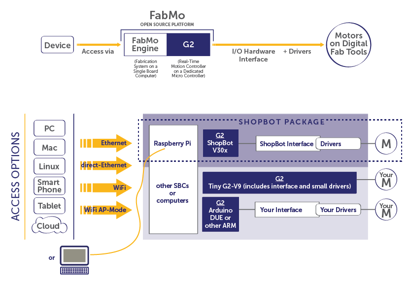
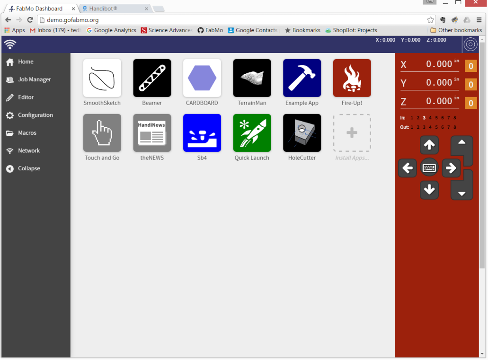

FabMo is an open-source, digital fabrication and motion platform of software and hardware. Having a front-end originated by a small team at ShopBot Tools, the FabMo Platform also encapsulates a powerful core motion system, G2, created by Synthetos (makers of TinyG). FabMo is available to be used, adopted, and adapted by anyone, to run and manage every digital smart tool imaginable, today and tomorrow -- providing users a single, compelling interface for all their fabrication equipment. Go FabMo to create, produce, and manufacture in ways that suit your style.
FabMo offers CNC users and digital-fabbers 5 essential features.
Sophisticated, 5th-order, state-of-the-art motion-planning is at FabMo's G2 core. "S"-shaped profiles improve the efficiency of machining and produce confident, brisk moves. High-resolution timing produces smooth surfaces. The FabMo interface makes running a cutting job easy with straight-forward starting, monitoring, and file-management.
FabMo will link a wide range of devices to your digital fab tool. Access a tool from a phone or any computer or tablet. Choose your access route. Be hard-wired for industrial robustness or go wireless. Decide whether you want to be networked or not. Control the tool with a device, or just monitor the action. And, post job files from your cloud storage, or allow only locally generated files for security. FabMo further supports a wide range of digital-fab workflows from traditional CAD > CAM approaches to a variety of "app" types. FabMo supports several motion languages including g-code and OpenSBP. Other languages may be added.
We hope the FabMo platform will serve the needs of the fabrication, motion, and robotics community and provide an open platform for shared innovation. The platform is programmable in multiple ways. There are simple macro-based functions for quick production use. One level up, we have created an environment for apps that can serve many users functions. Apps are programmable in familiar languages of the web. Apps can provide utility functions and carry out common jobs; they can also serve-up complex digital-fab projects whose parameters can be customized by users.
Near-real-time operation for interactive control is made possible by the dynamic planning on which the G2 system is based. App development with responsive motion and programmed filtering can creates opportunities to new types of human-machine interface enhancing creative and productive work.
FabMo was designed for the Industrial Internet of Things (IIoT) and Industry 4.0. Smart sensing and reporting will help optimize performance for production tools improving productivity and quality. A wide range of inputs from tools inputs to FabMo can happen over multiple channels -- from direct low-level inputs to the G2 controller to networked and browser sensing.
Five 5 years ago, ShopBot began an ambitious project to develop a new software system to run CNC and digital fabrication tools -- computer controlled robotic tools that fashion items by subtraction cutting and machining components from blocks and sheets of material, or addition by infusing, hardening, and generally building-up items from raw material. Fifteen years previously, ShopBot had led in showing how industrial automation tools could be made affordable using the capabilities of the then new, personal computer. Today, powerful new capabilities are made available in the next generation of micro-controllers that allow putting even more capability at lower cost in the control of robotic equipment. We needed this capability for our own machines. We decided to develop it for ourselves and anyone else who wants to put the system to use. We call the system FabMo -- short for digital Fabrication and Motion software platform.
The first challenge is the CAD to CAM workflow for generating tool-path files. The difficulty of doing CAD and CAM creates a tough hurdle, particulary for simple projects or routine work. The second challenge is that running the files that are generated from CAM output is made complicated by proprietary or idiosyncratic tool languages and by tool interfaces having restrictive connectivity and little interoperability.
With the FabMo digital fabrication and motion platform, we introduce an approach to digital fabrication that opens new paths of use and frees access to tools. We take advantage of progress in microprocessors and microcontrollers, which now offers low-cost options for managing and driving digital fabrication equipment and inter-connecting equipment, sensors, and other data sources. The FabMo "Engine" looks outward from a digital fab tool allowing access via wireless and wired routes, from almost any type of device, and utilizing multiple and expandable motion languages. It efficiently feeds the FabMo "Core" -- a low-level, real-time, high-performance motion-system producing graceful fabbing action.
FabMo links a fabrication tool to apps and projects. Such apps will make content created for digital fabrication more available and customizable to users' needs. FabMo supports links for managing cloud apps, projects, galleries, and accounts.
Diagram of FabMo. Top line shows the general model of FabMo for digital Fabrication -- the connection from a device in the world, to a tool's motion system, and the electronic and mechanical hardware that support it. The lower portion of the diagram shows the current ShopBot/Handibot instantiation of FabMo by way of detailed example, as well as other options available to developers and OEMs.
FabMo is based on two hardware components: 1) an SBC (single board computer) on which the "Engine" - interface, communications, and management systems - runs; and 2) a microprocessor the provides real-time environment for the "Core", G2, motion functions.
FabMo is a collection of software components and well-documented APIs. The FabMo Engine, running in linux on the tool's SBC, connects a digital fab tool to the world; handles local user needs; manages the flow of jobs to the real-time core.
Programmed primarily in javascript and node.js, the FabMo Engine serves up a contemporary, mobile-friendly web interface. Several base modules provide run-times for different digital-fab-tool path languages and serve as models for creating others.
More importantly, FabMo provides a framework for developing and hosting "apps" that will contribute a wide range of usability to digital fab tools. App Developer Resources include definitive and documented "example apps" that serves as a template for app development as well as several more specific examples. Apps are written in the languages of the web (HTML, Javascript, Coffeescript, CSS, etc) so that as tools for the web grow, so do our tools for doing digital fabrication!
The FabMo "G2 Core" resides on the ARM microcontroller. It represents work of the Synthetos team. G2 is a sophisticated motion system: high speed (high step rates), advanced "S" shaped ramping for smooth and efficient accelerations and decelerations, all running in real time and not requiring fussing with PC timing functions or USB converters.
FabMo "Dashboard" Interface. Showing system apps (left panel), apps area, and Digital Read Out (DRO; optionally displayed on right).
There are lots of good examples online of apps that use fabmo.js and the Handibot Dashboard - Choose one of interest and you can check it out here. (Note that when opened here they will open in your full browser and not the Dashboard.)
Open up our virtual FabMo Dashboard to see the look and feel of the interface and apps in action. This is just like running a real tool ...
Check out the API documentation for the details on making use of FabMo functionality in your own apps.
And there is always the FabMo project itself on GitHub. Code, apps, and resources. Join the community.
FabMo has been implemented for the Version 2 generation of Handibots. Handibot provides and example and test bed for demonstrating FabMo functionality and capabilities. Feel free to explore ...